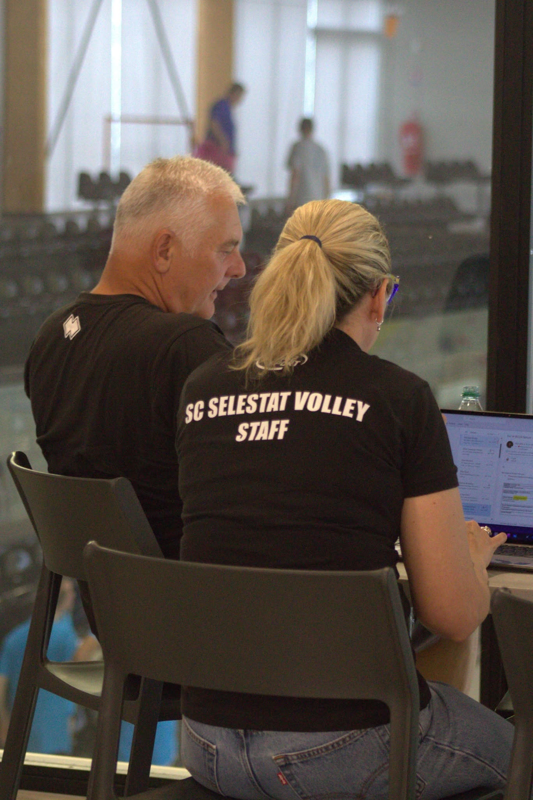

Préparer votre venue
📍 Localisation
Le tournoi se déroule dans le nouveau gymnase de Sélestat, antenne du club de volley local. Le staff du SC Sélestat Volley s'est fortement mobilisé pour garantir un accueil optimal de toutes les délégations.
🍽️ Restauration
Tout est prévu sur place pour les sportifs :
- Buvette ouverte tout le weekend.
- Petit-déjeuner proposé le dimanche matin.
- Repas du midi disponibles sur commande.
- Repas de restauration sur place organisé le samedi soir pour toutes les équipes, suivi par une soirée festive (pleins d'animations au programme).
🛏️ Hébergement & accueil
Plusieurs hôtels partenaires sont situés à proximité immédiate du complexe sportif. Le site est entièrement pensé pour être accessible à un public varié, illustrant la capacité d'adaptabilité terrain de notre équipe d'organisation.
